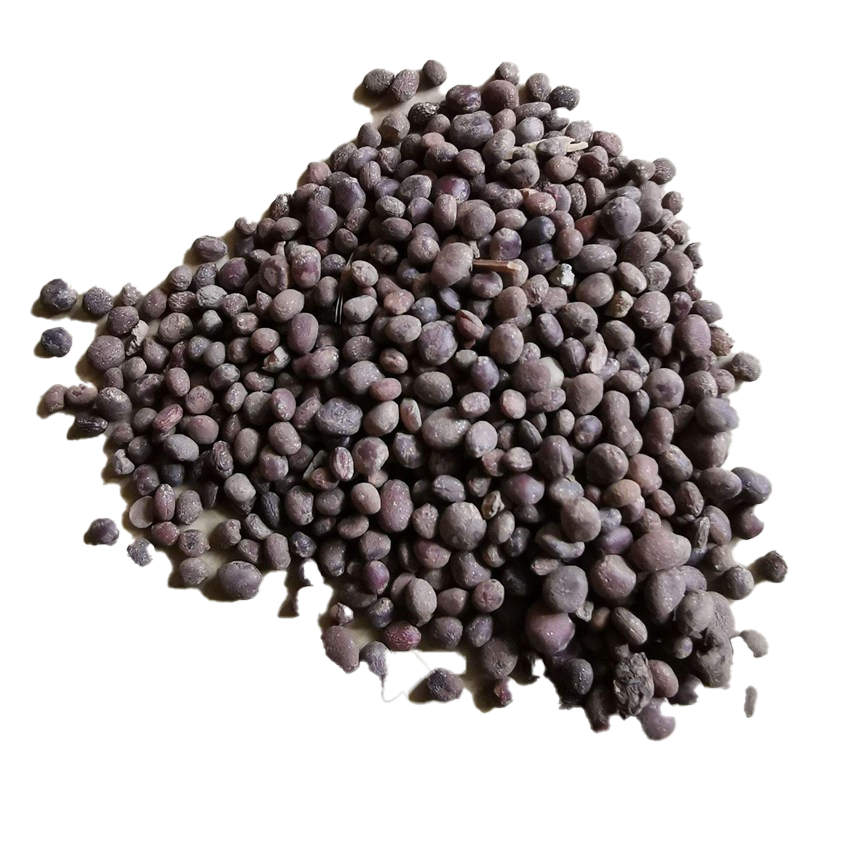

🌻 凤仙花实验区
1. 选择播种数量
🌰 播种行数
1 行
2 行
3 行
4 行
🌰 每行播种列数
2 列
5 列
8 列
10 列
📐 共
10
颗种子
🌱 槽A: 行距 10.0cm · 株距 8.3cm
🌱 槽B: 行距 10.0cm · 株距 8.3cm
2. 操作工具
📱 点击工具后再点击种植槽进行操作
🖥️ 拖拽工具到种植槽

种子
🚿
水壶
🧪
肥料
➕ 投放到槽A
➕ 投放到槽B
📊 实验数据对比
🌱 种植槽 A (50cm × 30cm)
株高:
0.0
cm
叶片:
0
片
🌱 种植槽 B (50cm × 30cm)
株高:
0.0
cm
叶片:
0
片
🔄 重置实验
📝 填写实验记录
🌱 种子数量 与 植株高度
种子数量：
颗
槽A 株高：
cm
槽B 株高：
cm
🍃 种子数量 与 叶片个数
种子数量：
颗
槽A 叶片：
片
槽B 叶片：
片
📤 提交实验数据
种植槽 A（50cm × 30cm）
待播种...
种植槽 B（50cm × 30cm）
待播种...